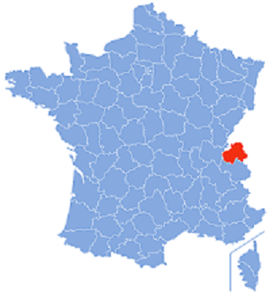

SON HISTOIRE
La Haute-Savoie est un département français faisant partie de la région Auvergne-Rhône-Alpes.
L'Insee et la Poste lui attribuent le code 74.
Les habitants de la Haute-Savoie sont les Haut-Savoyards.
Le département comprend le nord de la région historique de la Savoie.
SA GEOGRAPHIE
La Haute-Savoie fait partie de la région Auvergne-Rhône-Alpes. Elle est limitrophe des départements de l'Ain et de la Savoie, ainsi que des cantons de Genève, de Vaud et du Valais en Suisse et de la Vallée d'Aoste en Italie. Une partie de la frontière avec la Suisse est matérialisée par le lac Léman, dont le canton de Vaud dans son intégralité. Sur son territoire est situé une partie du massif du mont Blanc, sur la frontière franco-italienne, sommet culminant de l'Europe de l'Ouest avec ses 4 808 m. L'altitude moyenne du département est de 1 160 m, et sa superficie de 4 388 km2.
SON CLIMAT
C'est un climat subcontinental et pour l'essentiel du département, montagnard, froid et neigeux en hiver, doux et orageux en été. Les intersaisons (avril et octobre) sont en moyenne plus sèches, mais la pluviométrie est globalement l'une des plus élevées de France